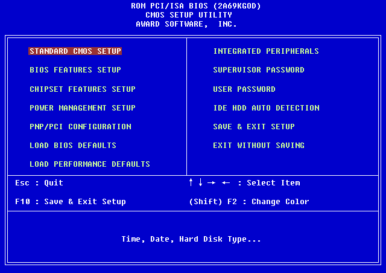

Soluzioni di TroubleShooting per MTB e componenti interni
Benevenuto nella pagina dedicata ai problemi della MTB e dei componenti interni!
orologio non funzionante e impostazioni del bios che si cambiano

cause
Batteria inserita in modo errato o esaurita
soluzioni
Fissare la batteria o sostituirla
In seguito all'aggiornamento del
firmware del BIOS, il computer non
si avvia.
cause
L'aggiornamento del firmware del
BIOS non è stato installato
correttamente.
soluzioni
Contattare il produttore della
motherboard per ottenere un nuovo
chip del BIOS (se la motherboard
dispone di due chip del BIOS, è
possibile utilizzare il secondo chip
del BIOS).
Il computer visualizza errate
informazioni sulla CPU durante
l'avvio del computer e Il computer visualizza errate
informazioni sulla CPU durante
l'avvio del computer.
cause
Le impostazioni della CPU non
sono corrette nelle impostazioni
avanzate del BIOS.
Il BIOS non riconosce
correttamente la CPU.
soluzioni
Regolare correttamente le
impostazioni avanzate del BIOS per
la CPU.
Aggiornare il BIOS.
Il LED dell'hard drive sul pannello
frontale del computer non si
accende.
cause
Il cavo del LED dell'hard drive
non è collegato o è allentato.
Il cavo del LED dell'hard drive è
orientato in modo errato rispetto
alle connessioni del pannello
frontale del case.
soluzioni
Ricollegare il cavo del LED dell'hard
drive alla motherboard.
Orientare correttamente il cavo del
LED dell'hard drive rispetto alla
connessione del pannello frontale
del case e ricollegarlo.
La NIC integrata nel computer ha
smesso di funzionare.
cause
Si è verificato un errore del
componente hardware NIC.
soluzioni
Aggiungere una nuova NIC a uno
slot di espansione aperto.
Il computer non visualizza alcun
video dopo l'installazione di una
nuova scheda video PCIe.
cause
Le impostazioni del BIOS sono
configurate per l'uso della scheda
video integrata.
soluzioni
Disabilitare il built-in video nelle
impostazioni del BIOS.
Il computer non visualizza alcun
video dopo l'installazione di una
nuova scheda video PCIe.
cause
Le impostazioni del BIOS sono
configurate per l'uso della scheda
video integrata.
Il cavo del monitor è ancora
collegato alla scheda video
integrata.
La nuova scheda video necessita
di alimentazione ausiliaria.
La nuova scheda video è
difettosa.
soluzioni
Disabilitare il built-in video nelle
impostazioni del BIOS.
Collegare il cavo alla nuova scheda
video.
Collegare i connettori di
alimentazione richiesti alla scheda
video.
\
Installare una scheda video
sicuramente funzionante.
La nuova scheda audio non funziona.
cause
Gli altoparlanti non sono connessi
al jack corretto.
L'audio e disattivato.
La scheda audio è difettosa.
I settaggi del BIOS sono impostati per usare la scheda audio on-board.
soluzioni
Collegare gli altoparlanti al jack corretto.
Riattivare l'audio.
Installare una buona scheda audio conosciuta.
\
Disattivare il dispositivo audio on-board nelle impostazioni del BIOS.
Il sistema tenta di fare boot da un dispositivo errato.
cause
I supporti sono stati lasciati in un'unità rimovibile.
Ordine di avvio configurato in
modo errato.
soluzioni
Verificare che le unità rimovibili non contengano supporti che interferiscono con il processo di boot e verificare che l'ordine di avvio sia configurato correttamente.
Verificare che le unità rimovibili non contengano supporti che interferiscono con il processo di boot e verificare che l'ordine di avvio sia configurato correttamente.
L'utente può sentire i fan che girano
ma il computer non si avvia e non ci
sono segnali acustici
dall'altoparlante.
cause
La procedura POST non è in
esecuzione.
soluzioni
Cablaggio guasto, CPU
danneggiata o errata o altro
componente della scheda madre.
I condensatori della scheda madre
sono distesi, gonfi, emettono residui
o sporgenti.